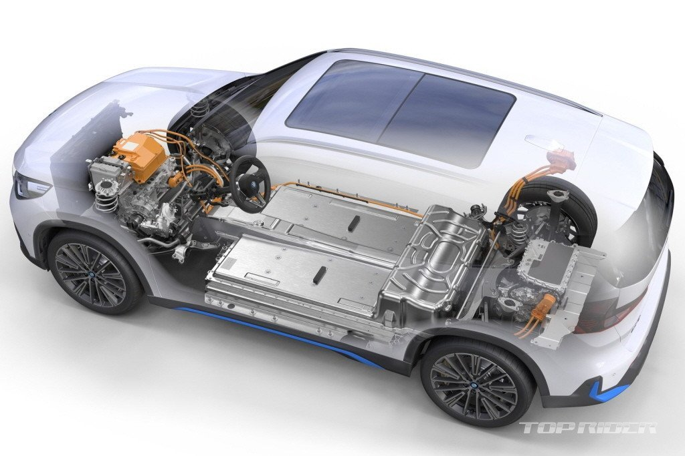

iX1은 BMW의 새로운 보급형 전기 SUV다. 신형 X1을 기반으로 한다. BMW코리아는 iX1 xDrive30의 사전계약을 진행하고 있는데, M 스포츠와 x라인으로 운영된다. 예상 가격대는 6600~~6950만원이다. 국고보조금은 295만원으로 실구매 가격을 6000만원 초반까지 낮출 수 있다.
iX1에는 64.7kWh 용량의 배터리가 적용됐다. 1회 완충시 환경부 기준 주행거리는 상온 313km, 저온 268km다. 80kWh 용량 배터리가 탑재된 상위 세그먼트 iX3와 비교해 상온 주행거리는 43km 낮고, 저온 주행거리는 13km 높다. iX1은 130kW급 고속 충전을 지원한다.
기사원문 